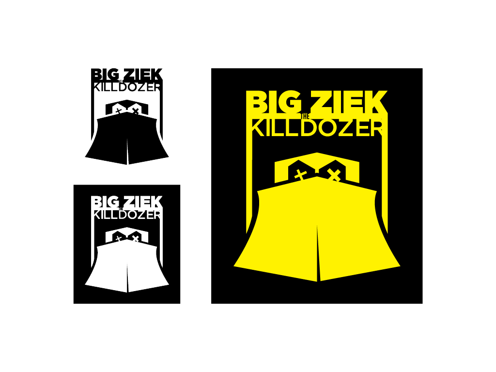
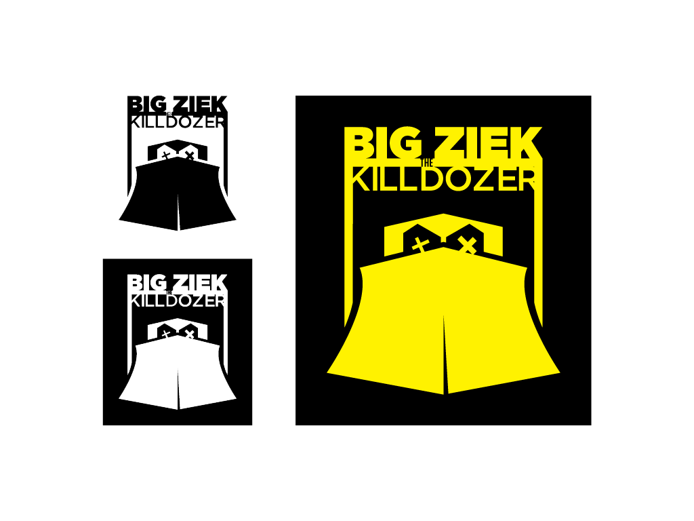

Branding
Sonido La Kalaka
 came to me for a logo to represent the music played regularly at parties and events. The owner wanted a design that portrayed his professionalism as a DJ and the type of music he would bring to any event. I really enjoyed working with this client creating a colorful logo with strong lines and sharp angles but also got to add some material to their brand.")


Big Ziek the Kill Dozer
 

Beast Recordings


Retainers Plus
Transoil Express


MaiKast


Little Mister